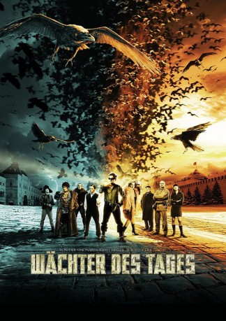

#3062 Wächter des Tages - Dnevnoy dozor
 
 IMDB-Wertung: 6.5 / 10
IMDB-Wertung: 6.5 / 10  Metascore: 59
Metascore: 59 
Auf der Treppe eines gesichtslosen Hauses wurde eine junge Frau kaltblütig ermordet. Jedoch werden keine Spuren von Gewalt an ihrem Körper gefunden. Schnell wird klar, dass die tote Frau eine Dunkle Andere und ein Mitglied der Wächter des Tages war, einer Geheimorganisation, die von dem mächtigen Hexenmeister Zavulon geführt wird. Der empfindliche Waffenstillstand zwischen Licht und Finsternis, der über Jahrhunderte gewahrt wurde, wurde gebrochen – und ein Heller Anderer ist der Hauptverdächtige. Der Befehlshaber der Wächter der Nacht, Lord Geser, sammelt seine Truppen eilig zusammen, denn eine Anklage wegen Mordes ist eine ernste Angelegenheit und die Konsequenzen könnten zum offenen Kampf zwischen Licht und Finsternis führen. Die Wächter der Nacht müssen reagieren. Aber zuerst muss Geser herausfinden, wo alle Hellen Anderen zum Zeitpunkt des Mordes waren. Es stellt sich heraus, dass nur Anton Gorodetksy kein Alibi für die fragliche Zeit hat…
Jahr: 2006
Dauer: 145 Minuten
FSK: 16
Land: Russland Studio: 20th Century Fox of GermanyTonspuren: DTS - ,
Untertitel: Deutsch,
Auflösung: 1080p (1920x816) Größe: 12288 MB
Genre: Action, Thriller, Fantasy
Regisseur: Timur Bekmambetov
Drehbuch: Timur Bekmambetov, Sergey Lukyanenko, Alexander Talal, Vladimir Vasiliev
Soundtrack: Yuriy Poteenko
Darsteller:
 Konstantin Khabenskiy als Anton
Konstantin Khabenskiy als Anton Viktor Verzhbitskiy als Zavulon
Viktor Verzhbitskiy als Zavulon- Dmitriy Martynov als Egor
- Anna Slyu als Tigryonok
 Anne Brochet als Gostya na dne rozhdeniya Egora , uncredited
Anne Brochet als Gostya na dne rozhdeniya Egora , uncredited- Sergey Shnurov als Gost na dne rozhdeniya Egora , uncredited
- Mariya Poroshina als Svetlana
- Vladimir Menshov als Geser
- Galina Tyunina als Olga
- Zhanna Friske als Alisa
 Valeriy Zolotukhin als Otets Kosti
Valeriy Zolotukhin als Otets Kosti Aleksey Chadov als Kostya
Aleksey Chadov als Kostya- Nurzhuman Ikhtymbaev als Zoar
- Aleksey Maklakov als Semyon
 Aleksandr Samoylenko als Medved
Aleksandr Samoylenko als Medved- Yuriy Kutsenko als Ignat
- Irina Yakovleva als Galina Rogova
- Georgiy Dronov als Tolik
- Nikolay Olyalin als Inkvizitor
- Rimma Markova als Koldunya Darya
- Igor Lifanov als Popugay
- Sergey Trofimov als Sekretar Zavulona
- Mariya Mironova als Mat Egora
- Anna Dubrovskaya als Vampirsha
- Sergei Ovchinnikov als V roli Sergeya Ovchinnikova
- Anton Stepanenko als V roli Antona Stepanenko
- Emir Baygazin als Tamerlan v yunosti
- Ekaterina Malikova als
- Elena Fatyushina als
- Aleksandr Shvetsov als
- Gani Kulzhanov als Voin Tamerlana
- Sergey Seryy als
- Shukhrat Irgashev als Barmen v kafe 'Zoar'
- Igor Burlov als Temnyy v restorane 'Khram Drakona'
- Olga Stukalova als
- Lyudmila Dolgorukova als Mat Galiny Rogovoy
- Valentin Bukin als Militsioner na stantsii metro
- Kazbek Salpagarov als
- Andrey Barshchevskiy als
- Amir Alpiev als
- Vladimir Sterzhakov als Taksist
- Sazhida Tashmatova als
- Valentina Berezutskaya als Starushka u metro VDNKh
- Denizbek Chalapinov als
- Viktoriya Zimenkova als
- Irina Domninskaya als Administrator restorana gostinitsy 'Kosmos'
- Romuald Makarenko als Temnyy na stantsii metro
- Aleksey Ogurtsov als Nachalnik okhrany gostinitsy 'Kosmos'
- Sergey Bystritskiy als
- Anna Kharlamova als
Datei: X:\2-Dilogie(N-Z)\Wächter der Nacht, des Tages\Wächter des Tages - Dnevnoy dozor (2006, FSK16, 1920x816).mkv seit 20.01.2016
Festplatte: HD Collection-2(A-Z)-3(A-M)
 Alle Filme aus Gruppe '2-Dilogie(N-Z)\Wächter der Nacht, des Tages'
Alle Filme aus Gruppe '2-Dilogie(N-Z)\Wächter der Nacht, des Tages'